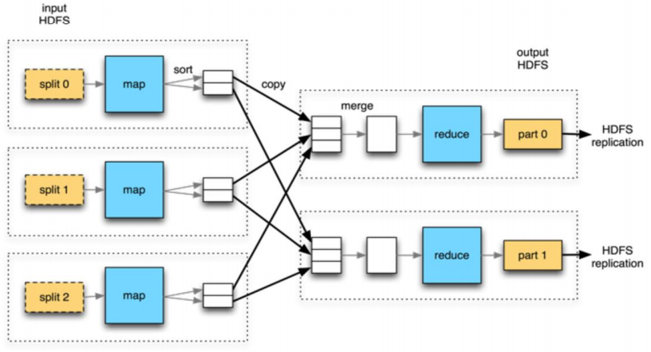
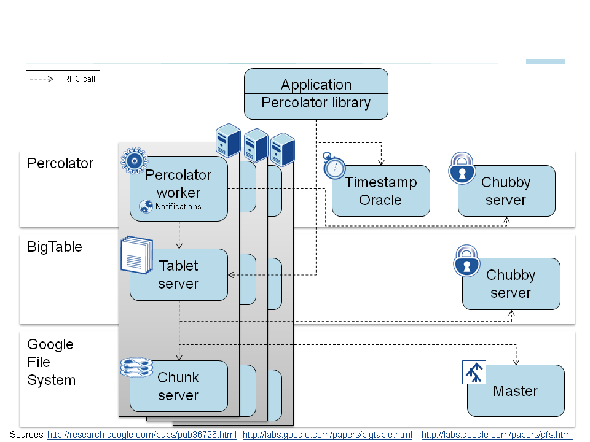

Scalability
NoSQL is intented to offer more scalability. A balance between the scalability and the consistency.
Vertical
Functional decomposition
Horizontal
Scale by cloing
Transversal
Partitioning similar things
Google Evulution
Google File System
Distributed file system to provide efficient, reliable access to data using large clusters of commodity hardward.
MapReduce
It is a parallel, distributed algorithm on a cluster.

Percolator
The process of updating an index is now divided into multiple concurrent transactions, each of which has to preserve invariants.

Pregel
It is system for large scale graph processing.
Dremel
Dremel is a distributed system developed for interactively quering large datasets.
DHT
We use hash function to select node of the cluster, acts as a routing function
CAP Theorem
The CAP theorem, also named Brewer’s theorem states that it is impossible for a distributed data store to simultaneously provide more than two out of the following three guarantees:
- Consistency: Every read receives the most recent write or an error
- Availability: Every request receives a non-error response, without the guarantee that it contains the most recent write
- Partition tolerante: The system continues to operate despite an arbitrary number of messages being dropped.
PACELC
-
P = Partition
- A: DynamoDB, Cassandra, Cosmos DB
- C: BigTable/HBase, MongoDB, MySQL Cluster
-
E = Else
- L: DynamoDB, Cassandra, Cosmos DB
- C: BigTable/HBase, MongoDB, MySQL Cluster
Consensus algorithm
It is used to achieve aggrement on a single data value among distributed processes or systems or the current state of distributed system. It is used to achieve reliability in a network involving multiple distributed nodes that contain the same information. A tipical use is to select the leader.
- Even if a single value is proposed, the network eventually recognizes it and choose it.
- Once the value is chosen by the network, it cannot be overwritten.
- Nodes don’t hear that a value has been chosen, unless it has really been chosen by the network.
Paxos
There are two main components Proposers(P) and Acceptors(A). There is also a listener(L), but it is less interesting for the majority of the discussion. Each nodes acts as all three. Proposers propose values based on client requests. Acceptors accept values and when there is majority/quorum, the proposed value is chosen and committed to the log. There could be a lot of of back and forth between P and A before the value gets chosen.
ACID
The relational database conforms with ACID principles.
- Atomic: Each transaction is treated as a single unit
- Consistency: A transaction can only bring the database from one valid state to another
- Isolation: Concurrent execution of transactions leaves the database in the same state that would have been obtained if the transactions were executed sequentially.
- Durability: once a transaction has been committed, it will remain committed even in the case of a system failure
BASE
Many NoSQL database conforms with BASE principles.
- Basic Availability: The system does guarantee availability
- Soft-state: State of the system may change over time, even without input.
-
Eventually consistent: The system will become consistent over
time, given that the system doesn’t receive input during that
time.
- Anti-Entropy Protocol: interchange update between nodes
- Reconciliation: All the replica arrive at a stable state.
- Liveness
NoSQL
NoSQL stands for Not Only SQL which provide simple, and flexible and usually schemaless structure. It does not provide the consistency such as we provide with SGBDR.
- Schemaless
- Distributed
- Structured Data
- Avoid Join (it allows scale horizontally)
Graph database
Graph databases are purpose-built to store and navigate relationships. Relationships are first-class citizens in graph databases, and most of the value of graph databases is derived from these relationships. Graph databases use nodes to store data entities, and edges to store relationships between entities. An edge always has a start node, end node, type, and direction, and an edge can describe parent-child relationships, actions, ownership, and the like. There is no limit to the number and kind of relationships a node can have.
- Amazon Neptune
- Neo4j
Key-Value
A key-value database is a type of nonrelational database that uses a simple key-value method to store data. A key-value database stores data as a collection of key-value pairs in which a key serves as a unique identifier. Both keys and values can be anything, ranging from simple objects to complex compound objects. Key-value databases are highly partitionable and allow horizontal scaling at scales that other types of databases cannot achieve. The document model works well with use cases such as catalogs, user profiles, and content management systems where each document is unique and evolves over time. Document databases enable flexible indexing, powerful ad hoc queries, and analytics over collections of documents.
- Amazon DynamoDB
- Redis
Semantic
- Triplestores
Columnar Database
A columnar database is optimized for fast retrieval of columns of data, typically in analytical applications. Column-oriented databases are designed to scale “out” using distributed clusters of low-cost hardware to increase throughput.
- Amazon Redshift
- Apache Cassandra
- Apache HBase
Search-Engine Database
A search-engine database is a type of nonrelational database that is dedicated to the search of data content. Search-engine databases use indexes to categorize the similar characteristics among data and facilitate search capability. Search-engine databases are optimized for dealing with data that may be long, semistructured, or unstructured, and they typically offer specialized methods such as full-text search, complex search expressions, and ranking of search results.
- Elastic Search
Document-oriented Database
A document database is a type of nonrelational database that is designed to store and query data as JSON-like documents. Document databases make it easier for developers to store and query data in a database by using the same document-model format they use in their application code. The flexible, semistructured, and hierarchical nature of documents and document databases allows them to evolve with applications’ needs.
- MongoDB
- Amazon DocumentDB
A simple description is key-value database where the value is document, e.g. JSON or XML.
{
field1: value1,
field2: value2,
field3: value3,
...
fieldN: valueN
}
- It is schemaless which means more flexibility to deal with complex data.
- we can have embedded document.
- we want to avoid using join.
- The difference with key-value is we are allowed to recover document with document’s attributes.
- Documents combine structure and content, and there is great freedom in their structure.
- We can simulate relationship using key of other document.
-
Documents are grouped into collections.
- We should only store documents of same type in a collection.
- If we liked store two types into one collection there must have a type identifier. Query one type of documents may require more time.
- CRUD must be common for all document inside the colelction
- Documents are polymorphic, which means they don’t have to maintain the same data structure.
- We may find the inconsistency of the referenced document in other document.
Design Decision
-
Balance between redundancy and performance,
normalizatión y denormalization.
- Normalization reduce the anomalies
- Denormalization Improve the performance.
- Priority for flexibility and scalability
- Be careful with document size, maximum 16MB
-
identify the indices
- index can improve the performance of read
- index also reduce the performance of write
- read heavy or write heavy
-
Think of frequent queries.
- If we have three products and all queries use all three products then we should put them into the same collection.
- Another situation we use same collecon is we know we will have more more types of product.
- Is it atomic requiered? since we don’t support transation across multiple document.
-
Schemaless != No schema, it means flexible
- same attribute can contains different data type
- It suit our developmente because types of queries/applications can change
Model Relationships Between Documents
-
Embedded Documents
- One-to-One
- One-to-Few
- Fast Retrieval
- Denormalization
- Two documents must be embedded if your information is always used together.
- One-to-Many: Embedded Documents
-
Document References
- Many to Many
- The referential integrity of these documents has to be controlled at the application level
- DBRef
-
Hierarchy
- Store reference to parent document
- Store list of children in parent document
MongoDB
Robust and scalable document oriented NoSQL. Doesn’t support transation across multiple documents.
- Schemaless
- Nested Document
- Semi-structured data
CRUD
Show collections
- Javascript: db.getCollectionNames()
- Console: show collections
Create
Insert
db.books.insertOne({'title':'Thinking in Java', 'autor':'Bruce Eckel'})
Bulk Insert
db.books.insertMany([{'title':'Thinking in Java', 'autor':'Bruce Eckel'}, {'title':'Effective Java', 'author':'Joshua Bloch'}])
By default the insertion is ordered. If there is a error during the insertiong it will just skip the document and continue with the next.
Uniqueness
The field name _id is reserved for use as a primary key; its value must be unique in the collection, is immutable, and may be of any type other than an array, by default an ObjectId is generated. ObjectId is made up of 12 bytes. The first four bytes are a timestamp with the second ones; the next three bytes represent the unique identifier of the machine; the next two are the process identifier; And finally, the last three bytes are an incremental field. It give us document creation date.
Read
Read All
db.collections.find()
db.collections.find().pretty()
Filter
db.books.find({'title':{$eq : 'Thinking in Java'}})
db.books.find({$and : [
{$or : [{'title':{$regex : '^Thinking'}}, {'title':{$regex : '^Effective'}}]},
{'title':{$regex : 'Java$'}}
]})
The syntax is { attribute: { $operador: value } }
Filter with Embedded Document
db.clients.find({"direction": {"street":"C/XX, 99", "city": "BB", "state":"SS", "ZIP":"123456"}})
Filter with Arrays
db.clients.find({"tel":["123456789", "987654321"]})
Update
db.books.update({'title':'Thinking in Java'}, {$set: {'ISBN':'978-0131872486'}})
the syntax is { $operador: { attribute: value } }
Upsert
If upsert set to true, creates a new document when no document matches the query criteria. The default value is false, which does not insert a new document when no match is found.
db.collection.update(query, update, {upsert: true})
Save
Updates an existing document or inserts a new document, depending on its document parameter.
db.collection.save(
<document>,
{
writeConcern: <document>
}
)
Delete
Single Item
db.books.remove([{'author':'Bruce Eckel'}])
Delete All Documents Inside The Collection
db.books.drop()
Has better drop performance than remove
Sort
db.books.find().sort({'title':1, ...more fields to use for sorting})
- ascending: 1
- descending: -1
Count
db.books.find().count()
db.books.count({"author":{$eq:"ABC"}})
Indexes
Indexes in MongoDB are generated as a B-tree. This increases the speed when searching and sorting when returning results. It is recommended that these fields have a high cardinality.
db.coleccion.createIndex({…})
db.coleccion.dropIndex({…})
db.coleccion.dropIndexes()
db.coleccion.getIndexes()
Single Field
db.coleccion.createIndex({ a: 1 })
Compound Index
db.coleccion.createIndex({ A: 1, B: -1, C: 1 })
The index that will be generated with the previous statement will group the data first by the field A ascendingly and then by the field B descendingly and the by the field C ascendingly. Composite indexes can be used to query one or more of the fields. In these case we can query A, or A and B together, or A and B and C together. We can only query together if they match the order.
Unique Index
The unique property for an index causes MongoDB to reject duplicate values for the indexed field.
db.coleccion.createIndex({'name':1}, {"unique":true})
Sparse Indexes
The sparse property of an index ensures that the index only contain entries for documents that have the indexed field.
db.coleccion.createIndex({'name':1}, {"sparse":true})
Partial Indexes
Partial indexes only index the documents in a collection that meet a specified filter expression.
db.coleccion.createIndex({'name':1}, {partialFilterExpression: {age: {$gt:18}}})
Index Intersection
MongoDB can use the intersection of multiple indexes to fulfill queries.
db.coleccion.createIndex({'name':1})
db.coleccion.createIndex({'age':1})
db.coleccion.find({'name;: "Jorge", 'age': {$gt:18}})
Index on Embedded Document
db.coleccion.createIndex({ address.city" : 1})
Multikey Indexes
To index a field that holds an array value, MongoDB creates an index key for each element in the array. These multikey indexes support efficient queries against array fields. The limitation is only one field can be array type.
db.coll.createIndex({<field>: < 1 or -1 > })
Covered Query
A covered query is a query that can be satisfied entirely using an index and does not have to examine any documents. An index covers a query when all of the following apply
- all the fields in the query are part of an index
- all the fields returned in the results are in the same index.
- no fields in the query are equal to null (i.e. {“field” : null} or {“field” : {$eq : null}} ).
Debug Query
db.colección.find().explain()
Aggregation Framework
Aggregation Pipeline
Aggregation operations process data records and return computed results, it is modeled on the concept of data processing pipelines with stages operators and the expression operators.
db.orders.aggregate([
{$match: { status: "A" }},
{$group: { _id: "$cust_id", total: { $sum: "$amount" }}}
])
Each operators receives a set of arguments
{<operador>:[<argumento1>, <argumento2>...]}
Expressions are used as filters, and usually have no state of their own except the accumulator. But not all the acumudor has the global state e.g. $project.
$project
Reshapes each document in the stream, such as by adding new fields or removing existing fields.
{ $project: { <specifications> }}
$match
Filters the document stream to allow only matching documents to pass unmodified into the next pipeline stage.
{ $match: { <query> } }
$sample
Randomly selects the specified number of documents from its input.
{$sample: {size: <positive integer>}}
$sort
Reorders the document stream by a specified sort key.
{ $sort: { <field1>: <order>, <field2>:<order> ... }}
$limit
Passes the first n documents unmodified to the pipeline where n is the specified limit.
{ $limit: <positive integer> }
$skip
Skips the first n documents where n is the specified skip number and passes the remaining documents unmodified to the pipeline.
{ $skip: <positive integer> }
$out
Writes the resulting documents of the aggregation pipeline to a collection.
{ $out: "<output collections>" }
$group
Groups input documents by a specified identifier expression and applies the accumulator expression(s), if specified, to each group.
{
$group:
{
_id: <expression>, // Group By Expression
<field1>: { <accumulator1> : <expression1> },
...
}
}
$unwind
Deconstructs an array field from the input documents to output a document for each element. Each output document replaces the array with an element value
{$unwind: <array field>}
$lookup
Performs a left outer join to another collection in the same database.
{
$lookup:
{
from: <collection to join>,
localField: <field from the input documents>,
foreignField: <field from the documents of the "from" collection>,
as: <output array field>
}
}
Map-Reduce
MongoDB also provides map-reduce operations to perform aggregation. In general, map-reduce operations have two phases: a map stage that processes each document and emits one or more objects for each input document, and reduce phase that combines the output of the map operation.

Reference
- MongoDB Getting Started
- MongoDB Relationships
- MongoDB Indexes
- MongoDB Query Optimization
- MongoDB Aggregation